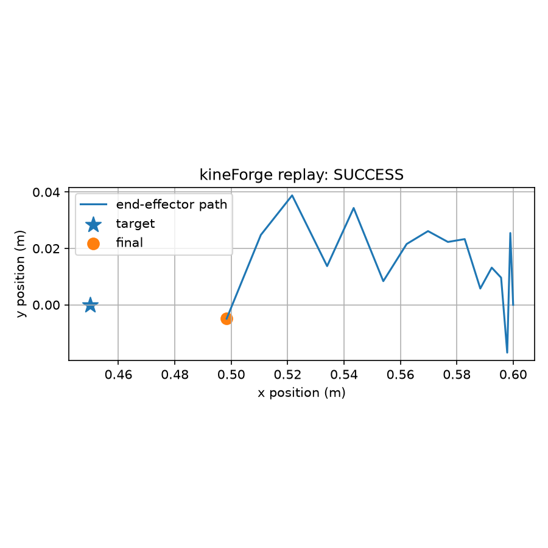
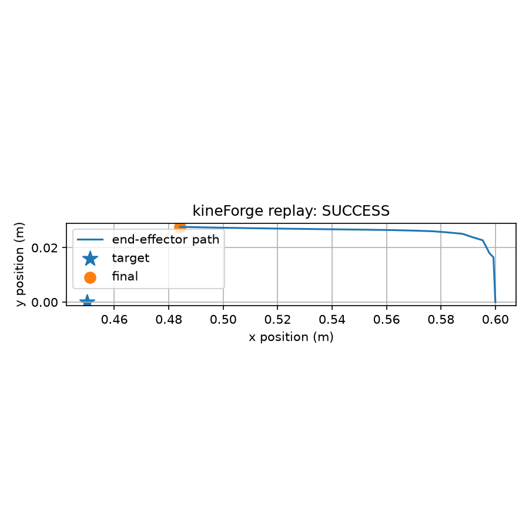
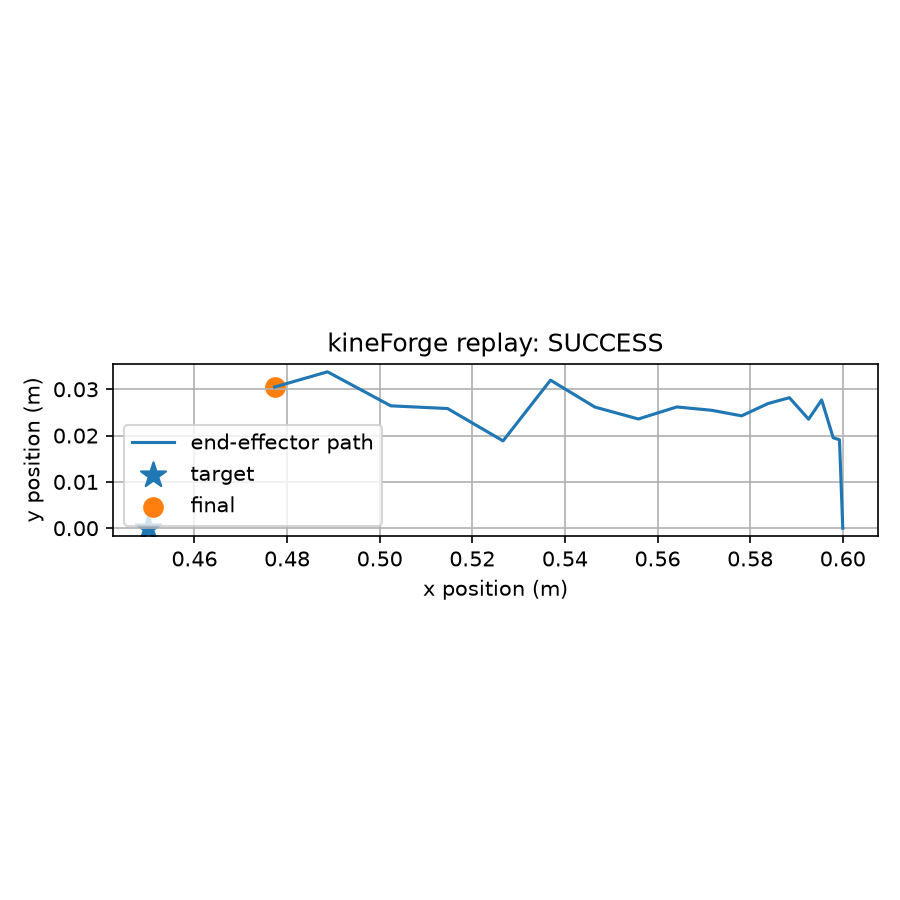
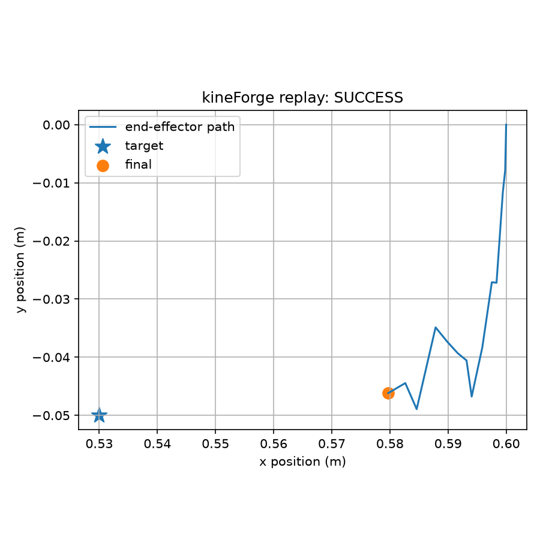
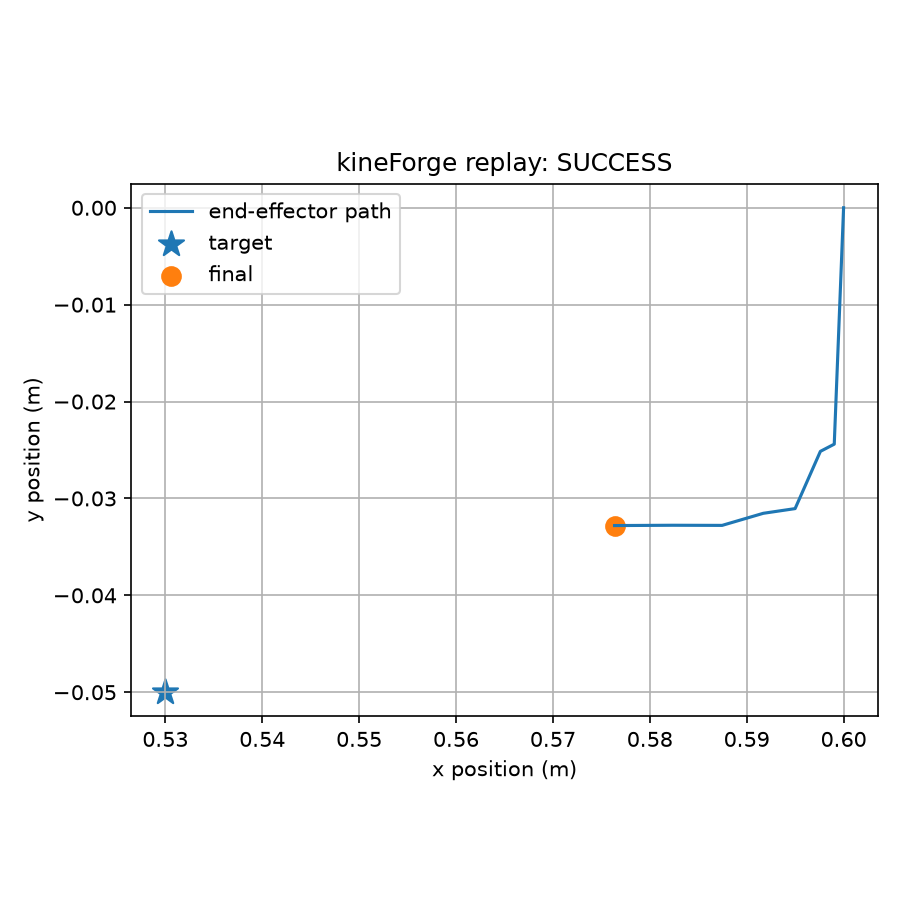

observation_noise
Gate: PASS
Success rate: 1.000
Mean final distance: 0.0399 m
Failures: noisy_observation
Adds configured Gaussian noise to observations during eval.

eval-matrix-20260627-111404defaultstandardGate: PASS
Success rate: 1.000
Mean final distance: 0.0399 m
Failures: noisy_observation
Adds configured Gaussian noise to observations during eval.

Gate: PASS
Success rate: 1.000
Mean final distance: 0.0439 m
Failures: none
No injected evaluation failures.

Gate: PASS
Success rate: 1.000
Mean final distance: 0.0439 m
Failures: high_friction
Placeholder for higher table/contact friction.
The current tabletop reach task uses kinematic joint-delta control and no contact-dependent object dynamics, so high_friction is documented but not physically modeled yet.

Gate: PASS
Success rate: 1.000
Mean final distance: 0.0439 m
Failures: low_friction
Placeholder for lower table/contact friction.
The current tabletop reach task uses kinematic joint-delta control and no contact-dependent object dynamics, so low_friction is documented but not physically modeled yet.

Gate: PASS
Success rate: 1.000
Mean final distance: 0.0463 m
Failures: action_noise
Adds configured Gaussian perturbation to policy actions during eval.

Gate: PASS
Success rate: 1.000
Mean final distance: 0.0480 m
Failures: action_noise, moved_target, noisy_observation, weak_actuator
Combines target shift, observation noise, action noise, and weak actuator effects.
Excludes low_friction and high_friction because friction is not physically modeled in v0.

Gate: PASS
Success rate: 1.000
Mean final distance: 0.0495 m
Failures: moved_target
Moves the target by the configured offset before each eval episode.
